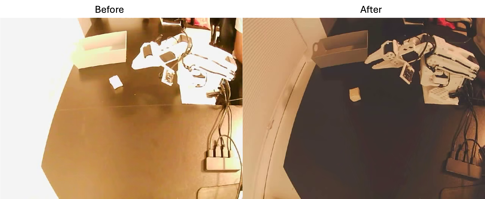
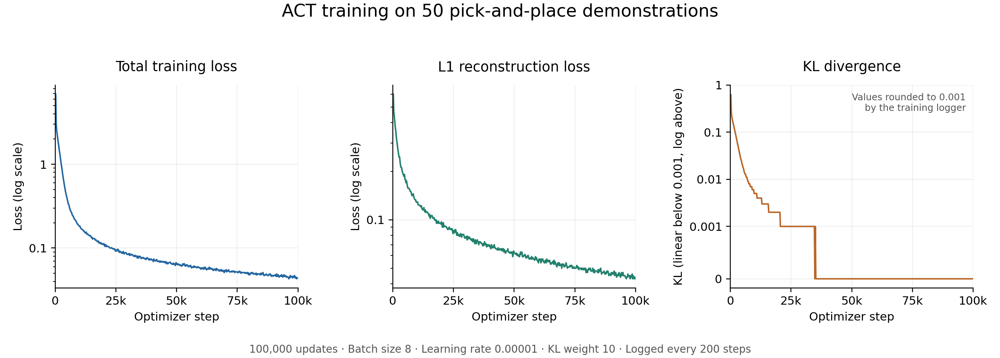
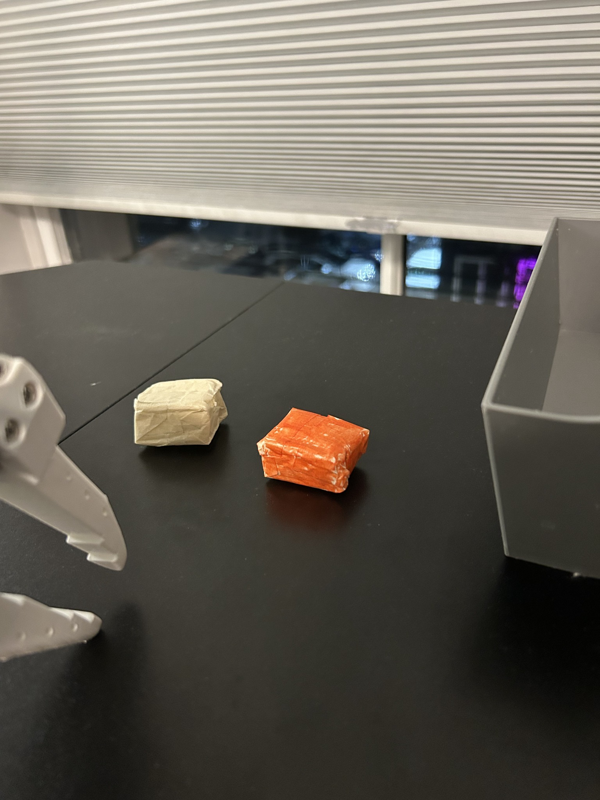

In my previous post, I described calibrating the SO-101 leader and follower arms and setting up an external camera and a wrist camera for teleoperation. Here I used imitation learning to teach the follower to pick up an object and place it in a box. I performed the task 50 times with the leader arm. Those demonstrations supplied the training targets for an Action Chunking Transformer (ACT), which I then evaluated on the physical arm.
I evaluated task completion in 50 trials with the object used for training and 10 additional trials with an orange object of similar size and material. I also recorded whether the arm lifted the object and whether it made another grasp attempt after a miss.
Demonstration collection
I initially tried controlling the leader arm while looking only at the two camera feeds. The external camera showed the workspace and the wrist camera gave me a close-up of the grasp. Even with both views, I found it hard to judge depth. I could line up the gripper with the object in the image and still be unsure how much farther to lower it before closing. Getting a reliable grasp this way took time.
For the training demonstrations, I moved the leader arm while looking directly at the physical object. I made sure the object was visible in at least one of the two camera views. I thought relying entirely on the screens might produce demonstrations better matched to what the policy could see, but I could collect clean examples much more efficiently by watching the workspace. I didn’t compare the two collection methods experimentally.
Direct observation helped me judge when to close the gripper. During inference, the policy would have to make that decision from the camera images and joint positions alone. I wanted to see whether those inputs provided enough information for a reliable grasp.
Before recording, I also had to fix the external camera’s exposure. The white box and parts of the arm blended into patches of white. I selected the external camera in CameraController on macOS and lowered the exposure manually until I could distinguish the box rim and gripper again. CameraController

I recorded 50 complete demonstrations comprising 23,622 frames, with both cameras configured for 640 × 480 at 30 FPS. Each episode contained one successful pickup and placement. There were no examples of missing the object and coming back for another grasp. The 50 autonomous trials described below were separate from these 50 demonstrations.
ACT and the training objective
I used a form of imitation learning called behavioral cloning. At each training frame, the inputs were the two camera images and the follower’s joint positions. The target was the sequence of joint commands I issued with the leader arm. This gave the policy a supervised learning signal without requiring a hand-designed reward for grasping or placement.
A demonstration is a complete episode. An action chunk is a short window within one. At a given frame, ACT takes the two camera images and the current joint positions and predicts a sequence of future joint commands. My configuration used 100 commands per chunk, about 3.3 seconds of motion at the nominal 30 Hz control rate. I could therefore record the whole task continuously and let the training pipeline form the windows.
ACT is a conditional generative model trained as a conditional variational autoencoder (CVAE). Consider two successful demonstrations in which the arm starts in a similar pose. I might approach the object a little faster in one than in the other. The images and joint positions need not determine a unique sequence of future actions. During training, a separate encoder sees the demonstrated action chunk and current joint positions and estimates a distribution over a latent vector, . The policy takes a sample from that distribution along with image features from a ResNet-18 backbone and the current joint positions. A transformer uses those inputs to reconstruct the demonstrated chunk.
The training loss has two terms. An L1 reconstruction loss measures how far the predicted joint commands are from the demonstrated commands. A KL-divergence term encourages the encoder’s latent distribution to stay close to a standard normal prior. My run used a 32-dimensional latent vector and a KL weight of 10. At deployment, the demonstration and its encoder are no longer needed. ACT sets , the mean of the prior, and predicts a chunk from the live images and joint positions. Original ACT paper · LeRobot ACT documentation
Training and deploying the policy
I used LeRobot 0.6.2 for training. The model had approximately 51.6 million trainable parameters. I used a batch size of 8, a learning rate of , and an ImageNet-pretrained visual backbone. Image augmentation was disabled. I configured the run for 100,000 optimizer updates, saving a checkpoint every 5,000 steps.

Training command and CUDA setup
lerobot-train \
--dataset.repo_id=ajohnvar/so101_first_test_20261028_223859 \
--dataset.root=/absolute/path/to/so101_first_test_20261028_223859 \
--policy.type=act \
--policy.device=cuda \
--output_dir=outputs/train/act_pick_place_v1 \
--job_name=act_pick_place_v1 \
--batch_size=8 \
--num_workers=1 \
--steps=100000 \
--save_freq=5000 \
--trackio.enable=false \
--policy.push_to_hub=falseThe local dataset directory must include the metadata and state/action data alongside the videos. In this LeRobot installation, the logging argument was --trackio.enable=false. The first time I launched training, the dataset and model loaded, but PyTorch fell back to CPU. The installed PyTorch 2.11 build expected CUDA 13.0, while the driver supported up to 12.9. Switching to the CUDA 12.8 build of the same PyTorch release resolved the mismatch. PyTorch installation commands by version
For inference, I copied the checkpoint’s complete pretrained_model directory to my MacBook Air and ran the policy locally on MPS. I reused the follower’s calibration ID and checked the camera mapping against the recording configuration. On my Mac, the wrist camera was index 0 and the external camera was index 1.
One small difference between collection and evaluation was the external camera image. I hadn’t saved the profile after adjusting it for training. When the camera reverted to its earlier settings, I adjusted it again by eye, so the inference settings differed slightly from those used for the demonstrations.
Mac rollout command for a 20-second deployment test
lerobot-rollout \
--strategy.type=base \
--policy.path="./act_pick_place/pretrained_model" \
--device=mps \
--robot.type=so101_follower \
--robot.port=/dev/tty.usbmodem5CE51189631 \
--robot.id=alan_follower \
--robot.cameras='{"external":{"type":"opencv","index_or_path":1,"width":640,"height":480,"fps":30},"wrist":{"type":"opencv","index_or_path":0,"width":640,"height":480,"fps":30}}' \
--fps=30 \
--duration=20 \
--display_data=trueThe port and camera indices are specific to my setup. This command starts autonomous motion, so I put the arm near its demonstration starting pose and cleared the workspace before launching it. LeRobot rollout documentation
During one 20-second deployment test, the control loop completed 555 ticks at an effective rate of 27.73 Hz against a target of 30 Hz. Six of the 554 ticks assessed by the timer exceeded the 33.3 ms work budget. These timing measurements describe that deployment test.
Evaluation with the original object
I recorded whether the arm placed the object in the box, whether it lifted the object, and what happened on missed attempts. A trial could still succeed after a miss. I used “clean” in my notes when the arm completed the task without a retry.
| Outcome | Trials |
|---|---|
| Clean pickup and placement | 28 |
| Successful placement after a retry | 4 |
| Object lifted, but time ran out before placement | 2 |
| Object never lifted | 16 |
| Total | 50 |
The arm completed 32/50 trials (64%). Of the 34 trials in which it lifted the object, 32 ended in successful placement. In the other two, it took several attempts to get the object off the table and time ran out. A common failure was to touch the object without securing it. In three trials I specifically noted that this contact moved the object and made the next attempt harder.
The arm’s ability to lift the object in 34 trials indicates that the camera views and joint positions provided enough information for grasping in many of the tested configurations. This was encouraging given how difficult I found depth judgment from the screens during teleoperation. The trials leave open which visual cues the policy used and whether it learned an explicit representation of depth.
Grasp attempts after a miss
I was surprised that four trials ended in a successful placement after an initial miss, since all 50 demonstrations contained a single clean grasp. In trial 12, the arm missed once and grasped successfully on the second attempt. In trial 5, it missed on the first attempt, touched the object on the second, and lifted and placed it on the third.
My interpretation is that, when ACT predicts a new action chunk, an object still on the table and a gripper near it may resemble the approach phase of a demonstration. Under those conditions, the policy could predict another grasp. In other trials, contact displaced the object and subsequent attempts also failed. I documented these behaviors in written notes. The evaluation sessions were not filmed, so I cannot determine whether a particular retry coincided with a new prediction or which observation prompted it.
Evaluation with an orange object
For a follow-up evaluation, I used an orange object of similar size and material. Given that the demonstrations involved only the original object, I was surprised that the policy completed four of the ten trials with the orange object. Three were clean placements, and one followed a missed grasp.

| Outcome | Original object | Orange object |
|---|---|---|
| Successful placement | 32/50 (64%) | 4/10 (40%) |
| Clean success | 28/50 | 3/10 |
| Success after a retry | 4/50 | 1/10 |
| Failure | 18/50 | 6/10 |
The fifth orange-object trial was another example of a miss followed by a clean grasp. In two failed trials, the gripper never touched the object. In another, the approach looked promising until a sudden jerky movement displaced it. I counted that as a failure, but the observation gives me no way to assign its cause to color or timing.
These trials show that the policy could complete the task with a change in object appearance. With ten orange-object trials and two physically distinct objects, the observed difference in success rates cannot be attributed to color alone.
Discussion
Grasp acquisition accounted for 16 of the 18 unsuccessful trials with the original object. In the remaining two, the arm lifted the object after several attempts and ran out of time before placement. Recording the lift separately from task completion made it possible to distinguish difficulty securing the object from difficulty transporting it to the box.
For a subsequent evaluation, I would record both camera views alongside the joint commands around each grasp attempt. I would like to compare a trial in which the arm succeeds after initial contact with one in which contact pushes the object out of reach. The written notes distinguish those outcomes, while synchronized recordings would make it possible to examine the gripper position and the commands that preceded each one.